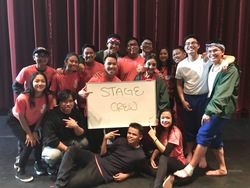
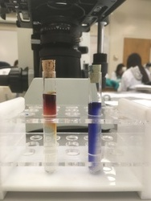
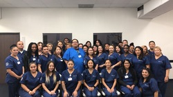
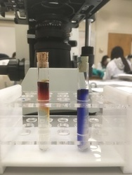
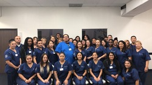

Jeorzsees Ang
Microbiology📚
I am currently a second year undergrad Microbiology student at the University of California, Riverside. My interest in the STEM field has only grown since I was introduced to it in middle school and all throughout high school. I am now able to explore and expand my knowledge through the courses and labs provided at UCR. Along with my interest in STEM comes my passion for helping others.I recently became certified to be a Nurses Assistant. Throughout the program, I learned the necessary skills to take care of those who need assistance with their activities of daily living, as well as notify the nurses with any changes in the patients which are important for the next steps in their plan of care. I look forward to all the experiences and lessons that come with this responsibility, but also the passion to move up in the healthcare field. I want to be able to achieve more than this role, and hopefully become a Registered Nurse or a Nurse Practitioner.
At UCR, I am involved with Katipunan, the Pilipinx cultural organization on campus. I enjoy learning more about my culture, meeting new people, and volunteering. There are many opportunities to volunteer with this organization. We have blood drives, something called “Kati Kleans” monthly where we clean a certain area in our community, and an annual two-day conference called “Katipunan Experience” where high schoolers get the chance to learn more about and pursue higher education with some of the organization members.
Experience
Store Associate
• Offer help and provide assistance to customers
• Process purchases, returns, and exchanges
• Organize and replenish front stock and help merchandise store
December 2017 - September 2018
High School Yearbook Editor
• Issued assignments and made sure the assignments were completed on time
• Manages or delegates all aspects of theme/concept work
• Completes the final check of a range of pages prior to submission and works with the adviser to ensure timely, correct submission of all deadlines
August 2016 - June 2018
UCR Katipunan Student Organization
• 2019 Pilipinx Culture Night Stage Crew
• Monthly Kati Kleans Watkins Drive
• 2019 Katipunan Experience Host
October 2018 - Present
Education
UC Riverside
Bachelors of Science in Microbiology
B.S. in Microbiology
September 2018 - June 2022
Portfolio




 